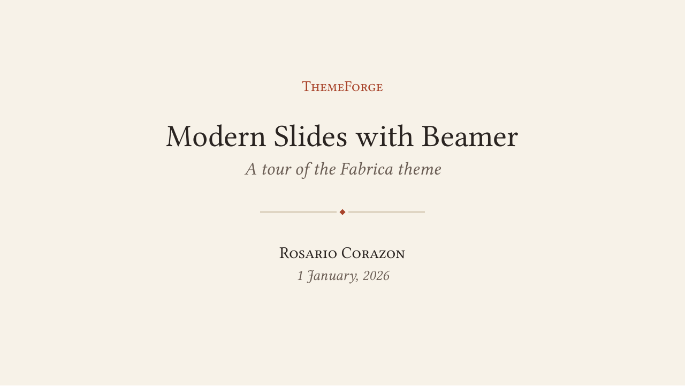
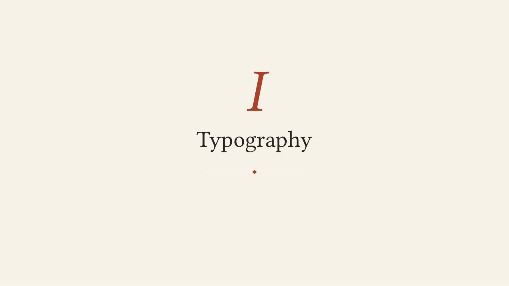
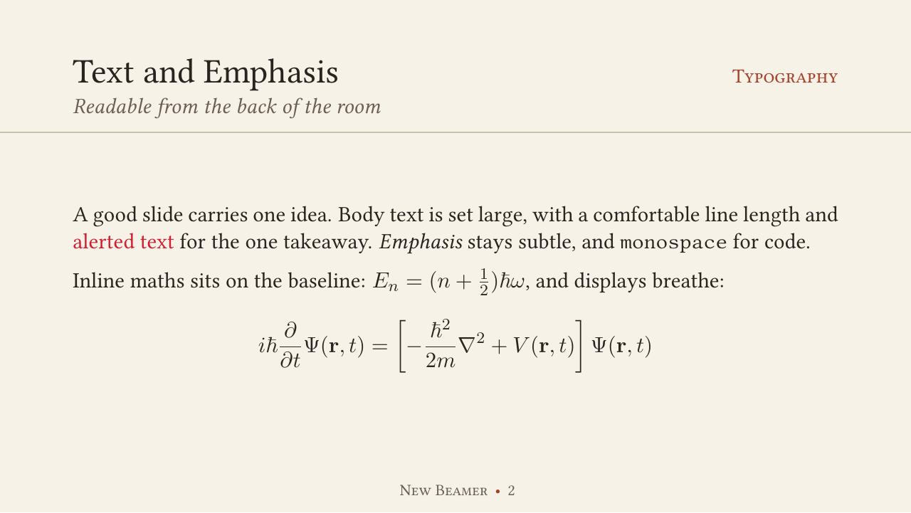
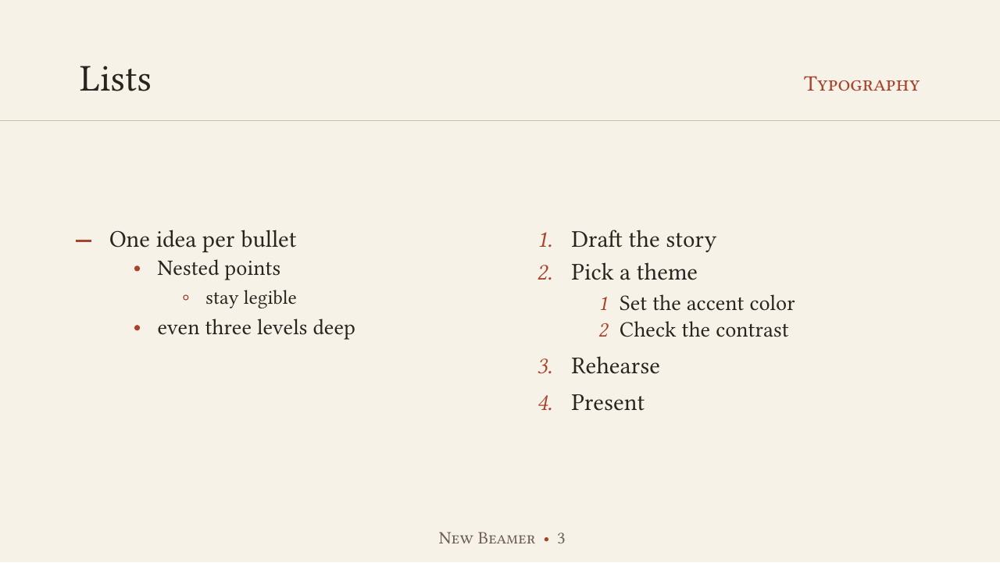
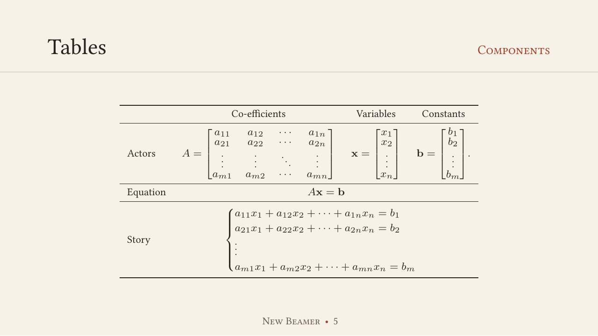
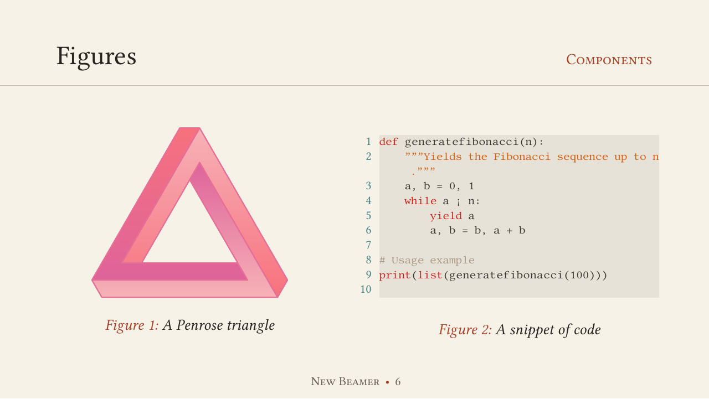
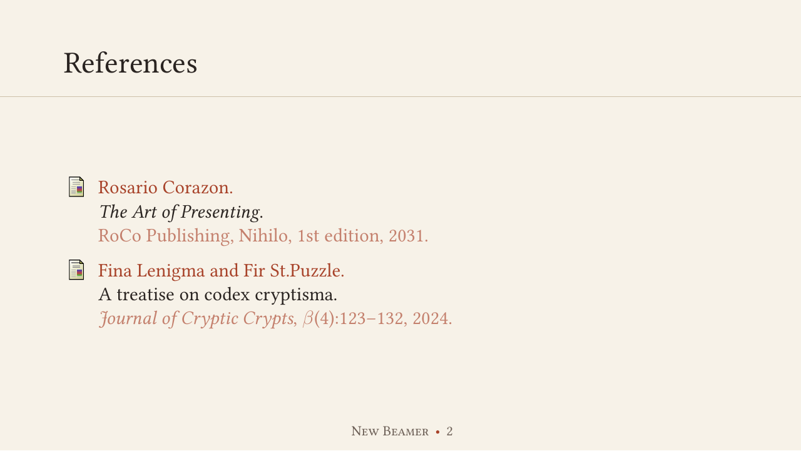
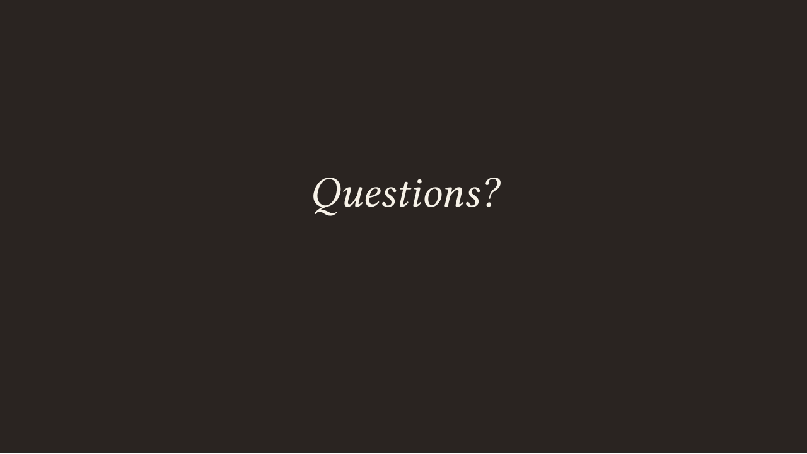

Themes / Fabrica
Fabrica
An editorial and serif-based theme with subtle design elements. Comes in three variants, with a customizable accent colour.
Inside the deck
















Compiled with default variant (paper). Click a slide to enlarge it.
Try an accent colour
Picking the right accent
Rule of thumb
Legibility matters
- Everything on a slide is meant to be seen.
- Ambient lighting also affects visibility.
TakeawayPick the variant and accent for the room, not just the screen.
ThemeForge3
- AaInk on paper
- AaAccent on paper
- AaAccent on block
- AaPaper on accent
Customise the accent colour
Use it
Put the theme file next to your .tex file, then add this line after \documentclass{beamer}:
\usetheme{Fabrica}